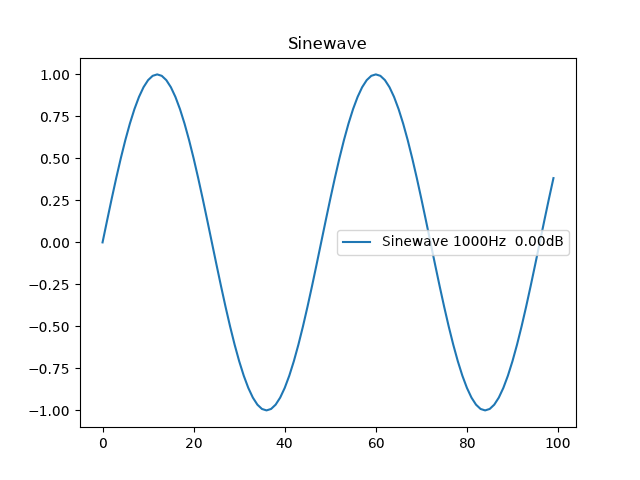

Python example for creatign and plotting a sinewave:
# coding: utf-8
import numpy as np
import matplotlib.pyplot as plt
fs = 48000
freq = 1000 #Hz
amp = 1.0 # Linear Amplitude
t = 100/fs # Seconds sample length
amp_db = 20*np.log10(amp)
file_name = 'sine_%dHz_%4.2f_amp' % ( freq, amp_db)
label_name = "Sinewave %dHz %5.2fdB" % (freq, amp_db)
#samples = np.linspace(0, t, int(fs*t), endpoint=False)
samples = np.arange(t * fs) /fs
signal =amp * np.sin(2 * np.pi * freq * samples)
fig, ax = plt.subplots()
ax.plot(signal, label=label_name)
ax.set_title('Sinewave')
plt.legend()
plt.show()
plt.savefig(filename + '.png')
Generates and saves this plot

To export the 'signal' data as a CSV file:
import csv
with open(file_name+'.csv', 'w', newline='') as csvfile:
f_writer = csv.writer(csvfile, delimiter=' ',quotechar='|', quoting=csv.QUOTE_MINIMAL)
f_writer.writerows(map(lambda x: [x], signal))
*.csv output:
0.0
0.13052619222005157
0.25881904510252074
0.3826834323650898
0.49999999999999994
0.6087614290087207